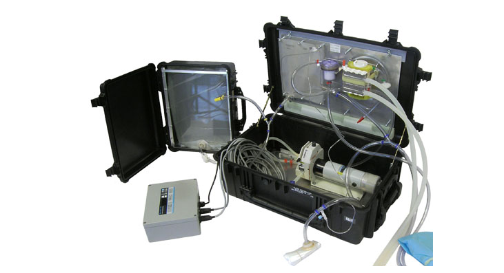
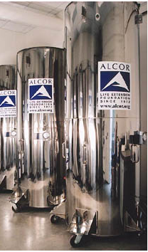
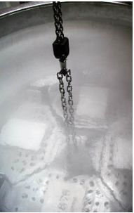

这两天正好是万圣节的档期，貌似从很多年前开始，年轻人就更多的热衷于西方的节日，即使是过鬼节，西方的也比我们自己传统的要更受关注。有的观点认为人死了之后变鬼，有的认为死了之后会轮回，还有的说也可能会变成丧尸，不管怎么样，大家一致认同的是人都是会死的。
可是今天在这里，我要给大家带来的正是一个永生的方法，或者说提供一种永生的可能–人体冷冻术！的确，有的人会说这并不是特别新鲜的事物，但是我想很少有人真正清楚地了解冷冻术，而且更少有人知道如果真的想被冷冻，应该从何开始，以及需要经历一个什么样的过程吧？
其实人体冷冻距离我们普通人来说也并不遥远，它早就走出了实验室来到了人们的身边，只需要九个步骤我们就可以把自己冷冻起来，并且顺利的话，也只需要这九个步骤，我们就能实现永生，那么我们直接来瞧瞧具体是哪九个步骤吧。
第一步：选择一个人体冷冻公司。
目前全世界有四家比较大的公司提供人体冷冻服务–美国亚利桑那州的Alcor，密歇根州的Cryonics Institute(CI)，加利福尼亚州的American Cryonics Society(ACS)以及俄罗斯的KrioRus，KrioRus是一家新近公司且发展迅速。这其中最大的两家是Alcor和CI，ACS没有自己的冷冻人存储设施，如果你选择了ACS，那么他们将会把冷冻后的你存放在CI。
经过我的进一步研究发现，Alcor相对来说更正统，而CI相对来说更经济实惠。CI是由人体冷冻学之父Robert Ettinger发起的。Alcor和CI这两家都是非盈利性组织，他们目前都已经冷冻了150个人左右，Alcor拥有超过1000名会员(这些会员去世后将会被冷冻)，CI的会员人数差不多是Alcor的一半。
第二步：成为你所选择的人体冷冻公司的会员。
在成为一个冷冻人之前，你需要填写一些表格、签署一些材料并且需要对这些材料进行公正。在这之后需要支付三种费用：作为会员的年费，在你去世后将遗体运输至存储设施的运费以及之后的存储、保养及唤醒费用。
Alcor的年费大概是700美金，而他的运输费和之后的一系列费用是捆绑在一起的，差不多是20万美金，Alcor提供另外一种只冷冻大脑的服务，费用会相对低一些，只需要8万美金。
CI的年费是120美金，或者可以选择1250美金成为终生会员，之后需要一次性支付的费用大概在3.5万美金，对于终生会员优惠价是2.8万美金。之所以看上去CI比Alcor便宜这么多这里主要有以下原因：
一个是CI的一次性报价3.5万美金并不包括运费，如果你的居住地离他不远，那么可以省下不少钱，否则需要另外和第三方运输公司签署一个9.5万美金的运输合同(终生会员价格是8.8万美金)。
另外，Alcor将使用你所花费资金中的一大半作为保证金，用来确保已经冷冻的客户不会因为公司财务等原因而被遗弃，因为在上世纪70年代曾经存在许许多多的人体冷冻公司，后来有一些破产倒闭了，导致已经在这些公司被冷冻的客户无奈被放弃，相信这样的结果是大家都不希望看到的，因此买一份保险还是非常必要的。
第三步：从你所选择的人体冷冻公司购买一份人身保险。
相对来说Alcor和CI都不是什么大公司，预算十分的有限，他们都无法保证每一个客户最后都能负担的起所有的费用。而对于客户来说，除非真的十分的富有，要不然人体冷冻是一笔着实不小的开销，那么一份人身保险可以强制客户通过日常的积累来支付最终的费用。
即便是对于年轻人来说，这份人身保险听上去也是比较便宜的。如果选择的是CI，那么基本上一年只需要支付300美金，这其中已经包括了120美金的会员年费；就算选择的是较贵的Alcor，算下来每个月也只要100美金左右。
这样的价格对于很多并不是真的特别富裕的人来说也是可以承受的，特别是一些还没有什么财富积累的年轻人，其本上看上去是省下一些买烟的钱就可以给自己买一个永久的保险了。
第四步：带上一个标志性手镯好好的活着。
所有的加入人体冷冻公司的会员都会得到一个刻有会员基本资料信息的手镯，公司会鼓励你一直带着它，这样即使是发生意外的身故，找到你的人会根据手镯上的信息联系公司。
第五步：传统法理上的死亡。
对于死亡的认定并没有严格的标准，不同的时期往往采用基于当时科技能力的判断。五十年前当你走在街上，一个人突然倒在你面前并且停止了呼吸，那么你和路认可能都会判断这个人突然死了，然后就把他当死人给处理掉。而今天碰到类似的情况我们不可能这么轻易下结论，而是会做一些心肺复苏这样的急救措施，很有可能就不会死。也就是说，五十年前我们认为的死人现在看来并不是。
目前，医学上对死亡的判断一般是指当事人的心跳停止了4~6分钟，因为这是大脑缺氧所能维持的一个最长的时间，之后大脑就会开始死亡。目前的技术在实验室里已经可以使超过十分钟没有鲜活心脏供血的大脑存活下来了。未来的科技，诸如纳米技术，分子层面的修复技术的发展，或许是可以使得更长时间没有心脏供血的大脑存活，从而改变目前对死亡判断的标准。
人体冷冻学的观点认为死亡并不是一个单一的事件而是一个过程，一个从心脏停止跳动开始到最后称为信息死亡的过程，这里所谓信息死亡指的是大脑已经被毁坏的十分的彻底以至于现在甚至将来也不可能恢复或者获取大脑里原本所存在的信息。
举一个简单的例子来帮助理解死亡的认定标准，假如有一个病危的人在被救护车救到A医院的时候心脏已经停止跳动15分钟了，A医院的医生只能无奈的摇摇头，宣布病人死亡。如果这个时候，知道对面B医院有一项新技术，可以使一个心脏停止跳动60分钟的人恢复心跳同时又能避免大脑的永久损伤，那么病人家属会怎么选？不用说，肯定马上转院咯。B医院要是救活了这个病人，那么理论上说他在A医院就没有死，只是以A医院的能力认为他已经死了。
人体冷冻学者的观点就是认为我们目前的水平所认定的死亡并不是真的彻底的死亡，所以存在这样一个B医院可以挽救，于上面例子里不同的是，这家B医院不是开在马路对面而是未来。
这也就是为什么人体冷冻学者们认为他们冷冻的不是死人的尸体而是需要被转院到未来进行治疗的病人，他们认为有很大的可能性我们今天所认为的尸体在将来某一天只是一种病人，所以他们认为自己所从事的这项工作是一种延伸医疗急诊服务。
但是以目前的科技水平并无法使冷冻人复活，所以从法律上来说冷冻人不能看作是一种医疗手段，而只是一种特殊的收殓方式，因为我们换个角度来看，如果把还未宣布正式死亡的人冷冻起来在法律上看来是一种谋杀行为，即使病人已经确定无药可救了，在目前的法规下他自己也无法选择在活着的时候被冷冻。就这一点上说，算是给了人体冷冻行为营造了一定的约束，也是为什么需要更准确的标准来定义死亡。
对于人体冷冻过程来说是一个关键因素。因为只有病人在法律上认为死亡之后，人体冷冻公司的工作人员才可以开始他们的工作，对人体进行冷冻，而如果可以得到那些危重病人自愿放弃治疗的承诺，那么工作人员可以在病人心跳已经停止而大脑还没有什么损伤的时候就介入，这样会对将来成功的唤醒有更大的帮助。
死亡其实是整个流程中的关键一步，所以这一步一定要尽可能的做的完美。
比较好的死法：指的是死于可以预知的因素，比如癌症等。这种情况你甚至可以在生前自己就来到Alcor或CI，然后在他么下属的或相关的合作医疗机构度过人生的最后阶段。你所要做的就是和人体冷冻公司的工作人员一起耐心的等待法律死亡那一刻的来临，之后他们就可以开展后续的冷冻工作了。
比较差的死法：指的是死于一些意外因素，比如心脏病突发。相对较好的情况是发病的时候正好周围有人在场而且可以帮忙联系上人体冷冻公司，然后可以将你迅速的送往医院，工作人员可以尽快的开始冷冻；相对较坏的情况在你死后数小时才被人发现，这种情况下，人体冷冻公司能做的就只是尽力而为了，因为大脑此时已经处于比较坏的状态了，不过由于无法知道将来的科技能发达到什么程度，或许还是有恢复的可能，所以只要不是信息死亡，还是可以进入冷冻流程保存起来的。
相对最差的死法：指的是死于严重的事故，大脑受到了严重的物理损害，比如说车祸。这种情况下，人体冷冻公司或许也无能为力了，比如对于那些死于911的Alcor会员。还有一种特殊情况也算是最差的死法，就是如果涉及某些案子，警方需要解剖尸体。难怪有一个签署了人体冷冻合同的会员被问及成为会员以后对生活有什么改变的时候，她说：最大的改变是我生活的更加小心了，开车更慢也更当心了，总是会注意自己身边的安全隐患。因为她不想死于最差的方式。
第六步：以最快的速度冷冻并运输至人体冷冻设施。
当你被认定为法理上的死亡后，理想状态下你所选择的冷冻公司的团队会立马接手后续的处理。 一般来说有他们首先要做的有两个事情，先将你放入一个装满冰水有浴缸里来给你降温，同时也是减缓你的新陈代谢过程，这样做可以延长身体机能的有效时间；然后就是让你的心肺功能得到一定的恢复以保持身体在一个稳定的条件下，他们把这个过程叫作心肺功能支持，而不是原本抢救病人时所有的类似震颤机这种心肺功能复苏。
接着会给你注射一系列的药物，以防止血液凝结和肉体腐烂。当以上一切都稳稳弄妥之后，接着是更多的外部介入，会在你大腿根部的大血管接入类似下面这样的设备：

这是一个人工的心肺机，可以用来保持一定的血液循环和氧气供给，从而替代一开始的比较初级的心肺支持术。除了恢复血液循环以外，这个设备还会吸收体内的热量，将体温控制在冰点以上一点点，并在血液中加入一些药物以使得生命可以在如此低的温度得到维持，这一招也正是目前做器官移植手术时，被移植的器官需要做长距离运输所采用的保鲜方式。
第七步：冷冻–玻璃化。
一般人都会认为人体冷冻嘛，就是把人冷冻起来，实际上并不是如此，采用的是一种叫作玻璃化的方法。
玻璃是一种很神奇的材料。它并不是一个严格意义上的固体，因为在将玻璃从液态降温凝固成固态的时候，它内部并不会结晶成一个有序的结构，而它明显也不是液体，因为它并不会流动，所以我们说它是一种非结晶的固体。这里所有表达的关键是，玻璃在从液态变化成固态时，并没有结晶，而是它当中的分子运动变得很慢很慢，直到几乎不动。
如果只是将人体冷冻起来，那么所有的体内的液体都会在一定温度达到冰点从而凝结起来变成固体。这不是一个好的方法，首先一点就是水在凝结成冰的时候体积会变大9%左右，那么体内的组织势必会被这种外在的扩张破坏，另外一点就是冰晶锋利的外表会刺穿细胞膜从和它周围的一系列组织。
因此，为了防止这种在液体凝结而带来的灾难性的破坏，人体冷冻的技术员会这里将要采用一种很酷的方式，他们会将体内的血液通过胸腔内的大动脉抽取出来，并将之替换为一种低温保护剂，这类似于一种医疗上的防冻液。这样做实现了两个目的，一个是将人体细胞内60%左右的水分替换为这种防冻液，同时又降低了剩下这部分水分的冰点。如果这一步做的完美的话，人体将不会冷冻凝结。接着呢，他们就开始给身体降温，在接下来的三个小时内会降到零下124度，这就是玻璃化的温度，在这个温度，体内的液体并没有结晶而是达到了一个很好的粘性使得没有分子可以移动。这个时候你就已经是一个非结晶的固体了，就像玻璃一样。
由于没有任何分子移动，体内所有的化学反应随之停止，没有了任何生物学现象，你的生命被暂停了。
看到这里或许还有许多的疑虑，实际上生物的玻璃化已经不是一个新鲜事了，我们的科学家们已经成功的玻璃化并恢复了人类的胚胎，精子，皮肤和骨头等人体组织，最新的消息是科学家们已经将兔子的大脑进行了玻璃化，并在恢复后取得了几乎完美的效果，这一结果意味着通过原封不动的保存原有脑细胞的结构，以及一些神经元的突触，低温冷藏术已经被证明是可以保存所有信息比如知识和记忆的方法了。
在你被玻璃化了之后，你还会被一点点的渐渐冷却，在接下来的两周内，将会被降温至零下196度。之所以要到这个温度，是因为这个时候氮气会液化，从此以后你将在液氮中度过很长一段时间。
第八步：漫长的存储。
Alcor把这一步委婉的称作”长期关怀”。作为一个新的玻璃人这时候你会被存放到一个差不多高3米宽1米的桶状容器内。在这里你将遇见你的新邻居，另外三个玻璃人，分别占了储藏桶的四分之一位置，以及第五个老兄，他没有身体，只是头部被存放在了储藏桶的当中。

如果你被存放在那种只存储头部的储藏桶里，你将会是45个共用一桶的一员，事实上我们需要保存的只有大脑，但是将大脑保存在头部内可以更好的避免损伤，这样看来，你的头部这个时候只是一个容器而已。

还有一点就是这个时候你是被倒立着存放的，因为液氮会从上方一点一点蒸发，正常情况下不会有什么问题，维护人员每周会将容器上下颠倒一次，但是如果有某个容器长时间忘了被颠倒的话，即使液氮蒸发完了，因为你是倒立着的，头部也会最后被影响到。即使停电了，你和这些冷冻人也是安全的，因为在整个冷藏过程中并不需要电力。
在这里你将度过接下来的或许是10年，100年，1000年，对于你来说并不得要，因为你的生命已经暂停了，无论何时唤醒你都是一样的，只要有唤醒的这一天。
第九步：复活。
这将是一个神奇的经历。
首先无论这当中去过了几十年还是几千年，对你来说就像打了一个小盹。当你睡着的时候，你可以感受到时间的流逝，睡了一晚上起来之后你会记得自己是睡了几个小时而不是几秒钟。但是当你的生命被玻璃化的暂停了，这就不一样了。你不会感受到任何的时间的流逝，你会觉得你之前都是清醒的并没有睡过觉，唯一的可能是你有可能丧失一小部分冷冻之前的短暂记忆。这个时候你会感到迷失，有人会和你解释现在你已经是在未来的某个时间，而且人体冷冻术成功了，接下来你将继续健康的生活下去。
重生之后的你会仔细的观察周围，观察着周围其它的人，其它和你一样复活的人所感受到无比的震惊。我所设想的冷冻人复活的场景大体于此，或许有些人并不感觉到震惊，因为他们坚信自己有朝一日被会唤醒。在短暂的震惊之后，你需要的是开始熟悉当时的世界：
这个世界可能很一般。科技并没有发达到什么程度，而你只是被简单粗暴的唤醒了，身体状况也不是很好，还得找一份工作来养活自己，而发现自己已经完全无法适应当时的社会了。
这个世界可能很美好。这其实是最有可能发生的，当你被唤醒的时候你发现周围的一切都是那么的新鲜很美好，虽然很多高科技的发达的场景你所不了解，但是你感觉你的身体年轻了许多，而和你一样被冷冻的家人朋友也都被唤醒了，你们继续在一起过着美好的生活。
这个世界可能是疯狂的。如果你被采用大脑仿真的方式唤醒，那么你将生活在一个虚拟的世界中。你不会感觉到自己是在一个电脑里，你会有强烈的自我意识，你是一个人，但是所有的事情对你来说可能变得不可思议。你的家人和朋友或许也可以通过这种虚拟的方式和你生活在一起，你们的生命现在是永恒的。
没人知道你被唤醒的时候世界究竟会是个什么模样，但是我非常愿意相信一切都在朝着美好的方向发展：
一个可怕的糟糕的未来没有闲心来关心已经被冷冻的这部分人，你将会一直被冷冻下去或者早就被破坏了。
既然将人体冷冻这么难的科技都突破了，我们有理由相信未来的人类已经有能力解决那些让世界变的糟糕的问题。
未来的趋势总是向好的方向发展的，至少从历史上看，我们现在的生活要好于200年前，1000年前，10000年前。
以上这些步骤，可以说是基于目前科学的发展水平，可以描绘的人类通往永生的路线图。而最终要成功的实现永生，需要完全满足以下四个前提：
1.没有死于严重的物理损坏，并且按计划被冷冻并存放在液氮中。
2.未来的科技的确达到了可以使你健康的复活的水平。
3.所选择的人体冷冻机构可以安全地不间断地保存你到那个可以使你复活的时候。
4.这个时候真正到来的时，那时的未来人选择将你唤醒。
如果你真的十分渴望永生，对人类未来的发展也有信心，经济能力也能承受得起，那么现在就可以开始尝试着联系Alcor或CI哈！
关于更多更详细的关于人体冷冻的故事，请阅读先前另外两篇文章：